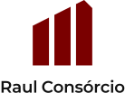
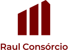
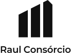
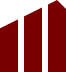
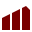
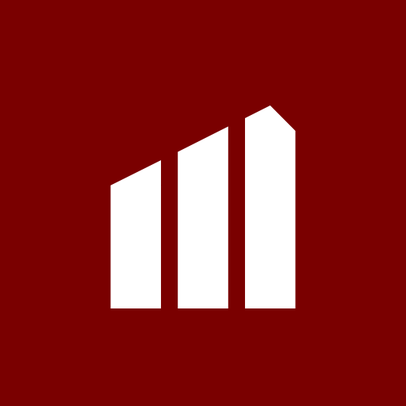

Direção C redesenhada: três volumes que sobem juntos, o último termina num telhado. Patrimônio construído passo a passo até o imóvel.
Tudo sai de uma grade simples, para o desenho se manter igual em qualquer tamanho.
A principal usa o vinho só no símbolo. As monocromáticas servem para impressão em uma cor, gravação e fundos que não combinam com o vinho.
Para perfil, capa de destaque, assinatura de vídeo e peças quadradas.



Sozinho, quando o nome já está por perto (header compacto, avatar, marca d'água em vídeo).

Desenhado à parte para cada tamanho, porque a diagonal vira borrão em 16 px. No de 16 os topos viram degraus retos e o telhado fica com 2 px; no de 32 todos os vértices caem em pixel inteiro.

32Fundo vinho, símbolo branco. O iPhone arredonda sozinho; no Android o recorte pode ser círculo, por isso a versão “maskable” deixa o símbolo dentro da área segura.

iOS · 180 pxA horizontal se mantém legível a partir de 24 px de altura. Abaixo disso, use só o símbolo.
Se o telhado acima parecer discreto demais, esta versão fecha o terceiro volume com duas águas iguais. Lê mais como “casa”, mas perde a diagonal contínua que vem da direção C.
Tudo em marca/. Os SVGs são regenerados por marca/fonte/gerar.js.
svg/logo-horizontal.svg principal
svg/logo-horizontal-{vinho,preto,branco}.svg
svg/logo-vertical.svg principal
svg/logo-vertical-{vinho,preto,branco}.svg
svg/simbolo-{vinho,preto,branco}.svg
svg/favicon.svg navegadores modernos
favicon.ico 16, 32, 48
png/favicon-16.png, png/favicon-32.png
png/apple-touch-icon.png 180
png/icon-192.png, png/icon-512.png, png/icon-maskable-512.png